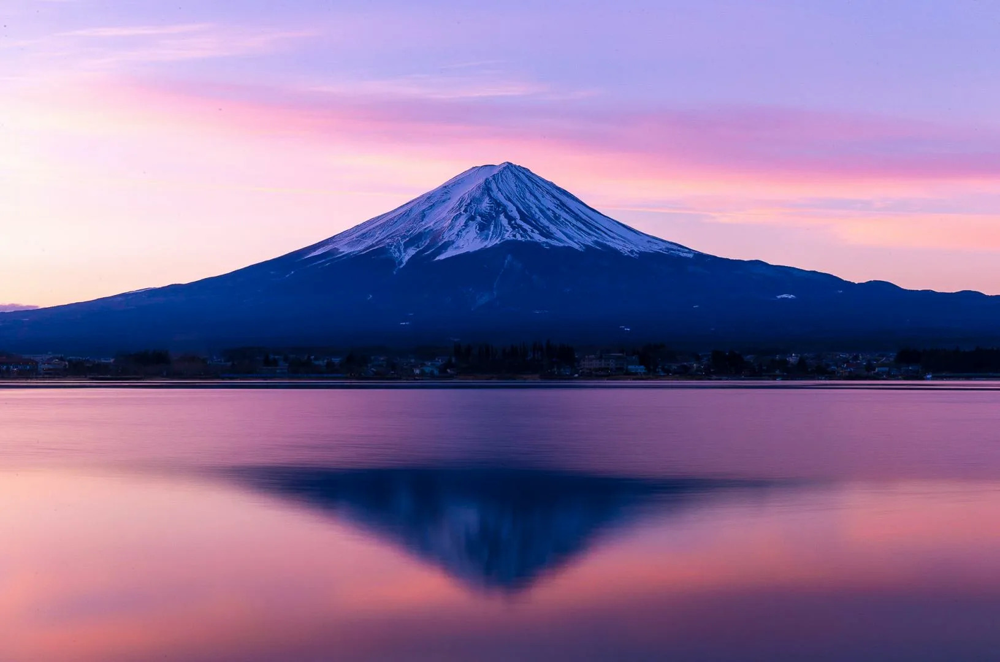

Гора Фудзи — символ Японии, завораживающий своей величественной красотой. Особенно впечатляюще она выглядит на закате, когда её заснеженная вершина окрашивается в мягкие оттенки розового и оранжевого. В это время суток Фудзи словно оживает, отражаясь в водах озёр и создавая незабываемые пейзажи, которые вдохновляют художников, фотографов и путешественников со всего мира.
